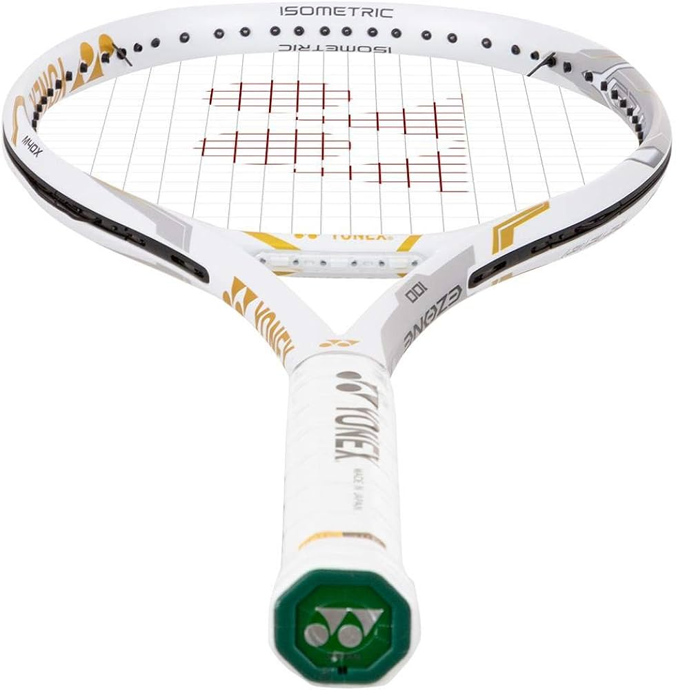
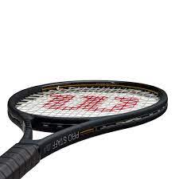
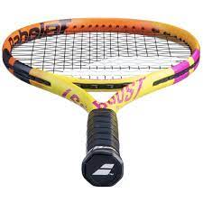

Ve la Bola. En tiros como el tiro de pase, en la boladevolución de servicio y en situaciones donde el jugador tiene mucho tiempo el porcentaje de errores debido a esta falta de atención es todavía mayor.
Relájate. El tenis se basa en movimientos coordinados y eficientes. Cada golpe requiere del uso de ciertos músculos en perfecta sincronización, lo cual significa que debemos aprender a identificar aquellos músculos que necesitamos para el golpe y aislarlos de aquellos que no contribuyen.
Automatiza el Círculo del Movimiento Roger Federer. Los mejores golpes del mundo pierden toda su efectividad cuando el jugador no logra llevar su cuerpo a una posición ideal de golpeo, como se puede observar cuando los profesionales empiezan a perder su nivel de juego después de los 30 años. El Circulo de Movimiento tiene 5 etapas:
Punta de los Totes. El jugador debe permanecer en la punta de sus pies con un alto grado de intensidad durante todo el punto.
Split step. Cuando el contrario empieza a mover su raqueta hacia la pelota el jugador debe saltar y caer al suelo en el momento del impacto entre la pelota y la raqueta del contrincante.
Giro de Hombros, primer paso y pasos de ajuste. En cuanto el jugador cae al piso después del «Split step» necesita girar los hombros en preparación para el golpe y mover los pies dirigiéndose hacia la pelota.
Base de apoyo. Una ves en posición el jugador necesita bajar su centro de gravedad doblando las rodillas para generar mas fuerza en el golpe.
Recuperación. Finalmente el jugador necesita frenar su movimiento lateral lo mas pronto posible y regresar al hacia el centro de la cancha volviendo a comenzar con el Circulo del Movimiento para contestar el siguiente tiro.
Busca el Punto de Contacto Ideal y Prepara con Tiempo. En el tenis el punto de contacto es el elemento crítico para lograr un buen tiro. Cada swing tiene un punto de contacto ideal que permite que la raqueta fluya eficientemente y sin esfuerzo. La meta en cualquier golpe es hacer contacto con la pelota en el punto ideal con la cabeza de la raqueta paralela a la red, las cuerdas alineadas detrás de la pelota y apuntando en dirección a donde se quiere efectuar el tiro.
Simplifica tus Golpes. La meta en cualquier golpe es hacer contacto con la pelota en el punto ideal, con la cabeza de la raqueta perpendicular a la red, las cuerdas alineadas detrás de la pelota y apuntando en dirección a donde se quiere efectuar el tiro.
| MODELO | RAQUETA | DATOS |
|---|---|---|
| Yonex EZONE 100 300g |  | Con varias generaciones a sus espaldas, la EZONE 100 continúa su trayectoria como una de las raquetas más versátiles y fáciles de usar. Más info... |
| Wilson Pro Staff RF 97 V13 |  | La Pro Staff RF97 v13, la raqueta personal de un campeón de 20 torneos de Grand Slam, ofrece un rendimiento superior y un diseño elegante adecuado para una leyenda. Más info... |
| Babolat Boost Aero |  | Esta raqueta Babolat Boost Aero sigue el diseño de la Pure Aero 2023 en un modelo más fácil de jugar. Esta raqueta será un arma maniobrable, potente y relativamente precisa para principiantes y jugadores jóvenes. |